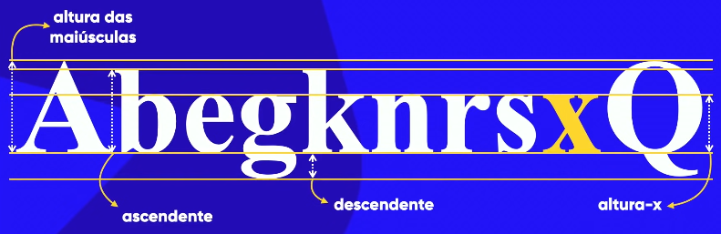
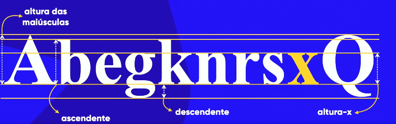
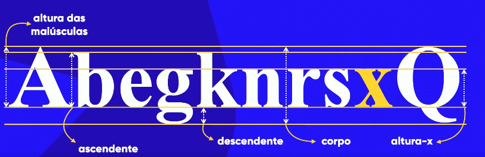

As letras são criadas a partir de uma anatomia, que se chama "Anatomia dos Tipos". Essa por sua vez permiti que as letras sejam criadas de forma correta.
Para criação das letras os designers geralmente costumam usar como base a letra "x" minúscula, pois está tem um padrão de superfície e extremidade mais plano, permitindo que as letras sejam medidas de forma mais simples.

Com essa base, as letras maíusculas são formadas a partir das letras "A" e "Q" maíusculas, sendo nomeado "Altura das Maíusculas".

Outra medida importante no design de letras provém da parte superior das letras minúsculas, que se chama 'Altura dos Ascendentes'.
Ainda temos o vazamento que se chama "Altura do Descendente", que é medido através da calda da letra "g" e da calda da letra "Q".
E por último temos a altura geral das letras que chamamos de "Corpo".
Um dos elementos mais importantes das fontes também, se chama serifa, que são alguns pontos na ponta de algumas letras. Essa por sua vez cria duas linhas pontilhadas, sendo uma superior e outra inferior, que facilita a leitura das palavras.
Precisamos fazer isso pois o nosso cérebro faz a leitura olhando para as palavras. Veja só...
Leia o texto abaixo com tranquilidade, porém de maneira fluída:
não ipomtra em qaul odrem as lteras de uma plvarala esãto, a úncia cosia ipmotarnte é que a piremria e útmlia esejsam no lguar creto. Itso é poqrue nós não lemeos cdaa ltera isladoa, mas a plravaa cmoo um tdoo.
Nas letras "k" temos uma haste; Na letra "A" temos duas hastes e um filete que é o que une duas hastes.
Um filete por sua vez pode unir duas astes ou dois arcos. Na letra "e" por exemplo temos dois arcos e um filete que une estes.
Na letra "n" temos um arco.
Na letra "b" temos um esporão, que é um sinal pontudo.
Na letra "A" também temos um sinal pontudo emcima que chamamos de vértice.
Na letra "r" temos um terminal, que é um elemento que não está preso em algum lugar.

Na letra "k" temos um elemento que sai para cima que é chamado de braço, e um elemento que sai para baixo que é chamado de perna, e abaixo da perna temos o pé. Na letra "A" também temos um pé.
Na letra "s" temos algumas curvas, chamamos estas de espinha.
Na letra "b" temos dois arcos grudados um no outro; chamamos estes de barriga.
Na letra "Q" temos um burraco no seu centro; chamamos esse burraco de olho.
Na letra "g" na parte superior temos uma orelha. E por fim ainda na letra "g" temos a calda na parte inferior.

Cada letra é chamada de glifo. E quando pegamos todos o conjunto de glifos, chamamos de fonte. Pórem algumas fontes além dos glifos, elas tem formas de representar esses glifos. Segue um exemplo abaixo:

Esses formatos chamamos de fámilia tipográfica e cada um tem o seu nome.

Nem toda fonte tem uma fámilia tipográfica tão grande. Algumas por sua vez tem um glifo apenas por exemplo.
Categorias de Fontes
Com todo esse contéudo apresentamos agora nossa categoria de fontes.
A padrão por sua vez no navegador é "Times New Roman". Mas covenhamos não vamos querer usar ela apenas toda vez! Podemos escolher diversos tipos de fontes...
Em textos muito longos por exemplo é recomendado usar fontes não serifadas (sans-serif), com espaços médios ou grandes, usando sempre cores complementares. Se possível fundo preto e letra branca.
Temos também as fontes monoespaçadas que são fontes com espaços menores entre as letras.
Temos fontes escriptadas ou manuscritas que são fontes que seguem um padrão parecido com a escrita a mão, chamamos essas fontes de handwriting.
E por último temos fontes comemorativas que são fontes com arte, e estas chamamos de fontes display.